SpringCloud
1.认识微服务
随着互联网行业的发展，对服务的要求也越来越高，服务架构也从单体架构逐渐演变为现在流行的微服务架构。这些架构之间有怎样的差别呢？
1.0.学习目标
了解微服务架构的优缺点
1.1.单体架构
单体架构：将业务的所有功能集中在一个项目中开发，打成一个包部署。

单体架构的优缺点如下：
优点：
- 架构简单
- 部署成本低
缺点：
- 耦合度高（维护困难、升级困难）
1.2.分布式架构
分布式架构：根据业务功能对系统做拆分，每个业务功能模块作为独立项目开发，称为一个服务。

分布式架构的优缺点：
优点：
- 降低服务耦合
- 有利于服务升级和拓展
缺点：
- 服务调用关系错综复杂
分布式架构虽然降低了服务耦合，但是服务拆分时也有很多问题需要思考：
- 服务拆分的粒度如何界定？
- 服务之间如何调用？
- 服务的调用关系如何管理？
人们需要制定一套行之有效的标准来约束分布式架构。
1.3.微服务
微服务的架构特征：
- 单一职责：微服务拆分粒度更小，每一个服务都对应唯一的业务能力，做到单一职责
- 自治：团队独立、技术独立、数据独立，独立部署和交付
- 面向服务：服务提供统一标准的接口，与语言和技术无关
- 隔离性强：服务调用做好隔离、容错、降级，避免出现级联问题

微服务的上述特性其实是在给分布式架构制定一个标准，进一步降低服务之间的耦合度，提供服务的独立性和灵活性。做到高内聚，低耦合。
因此，可以认为微服务是一种经过良好架构设计的分布式架构方案 。
但方案该怎么落地？选用什么样的技术栈？全球的互联网公司都在积极尝试自己的微服务落地方案。
其中在Java领域最引人注目的就是SpringCloud提供的方案了。
1.4.SpringCloud
SpringCloud是目前国内使用最广泛的微服务框架。官网地址：https://spring.io/projects/spring-cloud。
SpringCloud集成了各种微服务功能组件，并基于SpringBoot实现了这些组件的自动装配，从而提供了良好的开箱即用体验。
其中常见的组件包括：

另外，SpringCloud底层是依赖于SpringBoot的，并且有版本的兼容关系，如下：

我们课堂学习的版本是 Hoxton.SR10，因此对应的SpringBoot版本是2.3.x版本。
1.5.总结
单体架构：简单方便，高度耦合，扩展性差，适合小型项目。例如：学生管理系统
分布式架构：松耦合，扩展性好，但架构复杂，难度大。适合大型互联网项目，例如：京东、淘宝
微服务：一种良好的分布式架构方案
①优点：拆分粒度更小、服务更独立、耦合度更低
②缺点：架构非常复杂，运维、监控、部署难度提高
SpringCloud是微服务架构的一站式解决方案，集成了各种优秀微服务功能组件
2.服务拆分和远程调用
任何分布式架构都离不开服务的拆分，微服务也是一样。
2.1.服务拆分原则
这里我总结了微服务拆分时的几个原则：
- 不同微服务，不要重复开发相同业务
- 微服务数据独立，不要访问其它微服务的数据库
- 微服务可以将自己的业务暴露为接口，供其它微服务调用
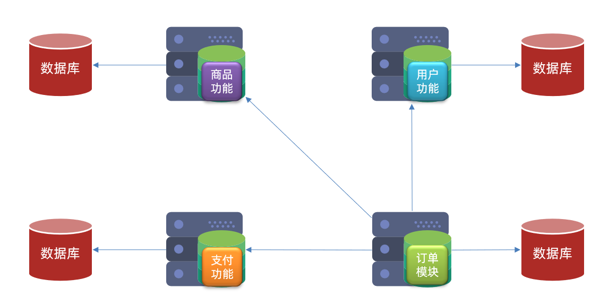
2.2.服务拆分示例
以课前资料中的微服务cloud-demo为例，其结构如下：

cloud-demo：父工程，管理依赖
- order-service：订单微服务，负责订单相关业务
- user-service：用户微服务，负责用户相关业务
要求：
- 订单微服务和用户微服务都必须有各自的数据库，相互独立
- 订单服务和用户服务都对外暴露Restful的接口
- 订单服务如果需要查询用户信息，只能调用用户服务的Restful接口，不能查询用户数据库
2.2.1.导入Sql语句
首先，将课前资料提供的cloud-order.sql和cloud-user.sql导入到mysql中：
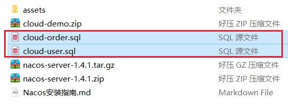
cloud-user表中初始数据如下：

cloud-order表中初始数据如下：

cloud-order表中持有cloud-user表中的id字段。
2.2.2.导入demo工程
用IDEA导入课前资料提供的Demo：

项目结构如下：

导入后，会在IDEA右下角出现弹窗：

点击弹窗，然后按下图选择：
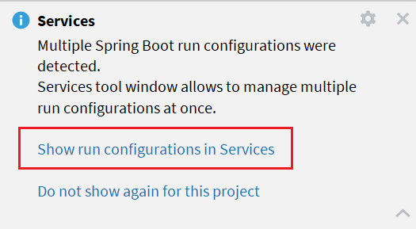
会出现这样的菜单：

配置下项目使用的JDK：

2.3.实现远程调用案例
在order-service服务中，有一个根据id查询订单的接口：

根据id查询订单，返回值是Order对象，如图：

其中的user为null
在user-service中有一个根据id查询用户的接口：

查询的结果如图：

2.3.1.案例需求：
修改order-service中的根据id查询订单业务，要求在查询订单的同时，根据订单中包含的userId查询出用户信息，一起返回。

因此，我们需要在order-service中 向user-service发起一个http的请求，调用http://localhost:8081/user/{userId}这个接口。
大概的步骤是这样的：
- 注册一个RestTemplate的实例到Spring容器
- 修改order-service服务中的OrderService类中的queryOrderById方法，根据Order对象中的userId查询User
- 将查询的User填充到Order对象，一起返回
2.3.2.注册RestTemplate
首先，我们在order-service服务中的OrderApplication启动类中，注册RestTemplate实例：
x1package cn.itcast.order;2
3import org.mybatis.spring.annotation.MapperScan;4import org.springframework.boot.SpringApplication;5import org.springframework.boot.autoconfigure.SpringBootApplication;6import org.springframework.context.annotation.Bean;7import org.springframework.web.client.RestTemplate;8
9("cn.itcast.order.mapper")10public class OrderApplication {12
13 public static void main(String[] args) {14 SpringApplication.run(OrderApplication.class, args);15 }16
17 18 public RestTemplate restTemplate() {19 return new RestTemplate();20 }21}
2.3.3.实现远程调用
修改order-service服务中的cn.itcast.order.service包下的OrderService类中的queryOrderById方法：
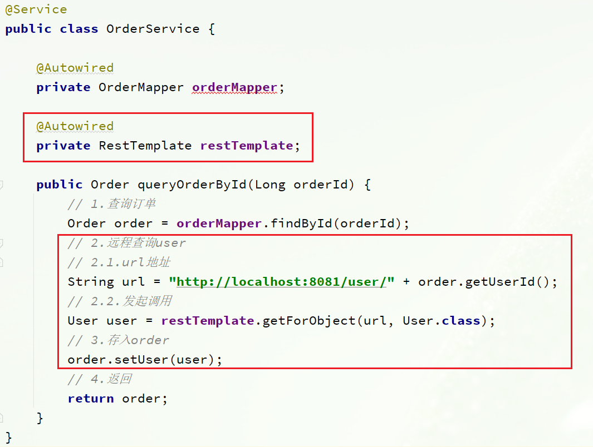
2.4.提供者与消费者
在服务调用关系中，会有两个不同的角色：
服务提供者：一次业务中，被其它微服务调用的服务。（提供接口给其它微服务）
服务消费者：一次业务中，调用其它微服务的服务。（调用其它微服务提供的接口）

但是，服务提供者与服务消费者的角色并不是绝对的，而是相对于业务而言。
如果服务A调用了服务B，而服务B又调用了服务C，服务B的角色是什么？
- 对于A调用B的业务而言：A是服务消费者，B是服务提供者
- 对于B调用C的业务而言：B是服务消费者，C是服务提供者
因此，服务B既可以是服务提供者，也可以是服务消费者。
3.Eureka注册中心
假如我们的服务提供者user-service部署了多个实例，如图：

大家思考几个问题：
- order-service在发起远程调用的时候，该如何得知user-service实例的ip地址和端口？
- 有多个user-service实例地址，order-service调用时该如何选择？
- order-service如何得知某个user-service实例是否依然健康，是不是已经宕机？
3.1.Eureka的结构和作用
这些问题都需要利用SpringCloud中的注册中心来解决，其中最广为人知的注册中心就是Eureka，其结构如下：

回答之前的各个问题。
问题1：order-service如何得知user-service实例地址？
获取地址信息的流程如下：
- user-service服务实例启动后，将自己的信息注册到eureka-server（Eureka服务端）。这个叫服务注册
- eureka-server保存服务名称到服务实例地址列表的映射关系
- order-service根据服务名称，拉取实例地址列表。这个叫服务发现或服务拉取
问题2：order-service如何从多个user-service实例中选择具体的实例？
- order-service从实例列表中利用负载均衡算法选中一个实例地址
- 向该实例地址发起远程调用
问题3：order-service如何得知某个user-service实例是否依然健康，是不是已经宕机？
- user-service会每隔一段时间（默认30秒）向eureka-server发起请求，报告自己状态，称为心跳
- 当超过一定时间没有发送心跳时，eureka-server会认为微服务实例故障，将该实例从服务列表中剔除
- order-service拉取服务时，就能将故障实例排除了
注意：一个微服务，既可以是服务提供者，又可以是服务消费者，因此eureka将服务注册、服务发现等功能统一封装到了eureka-client端
因此，接下来我们动手实践的步骤包括：

3.2.搭建eureka-server
首先大家注册中心服务端：eureka-server，这必须是一个独立的微服务
3.2.1.创建eureka-server服务
在cloud-demo父工程下，创建一个子模块：

填写模块信息：

然后填写服务信息：

3.2.2.引入eureka依赖
引入SpringCloud为eureka提供的starter依赖：
xxxxxxxxxx41<dependency>2 <groupId>org.springframework.cloud</groupId>3 <artifactId>spring-cloud-starter-netflix-eureka-server</artifactId>4</dependency>
3.2.3.编写启动类
给eureka-server服务编写一个启动类，一定要添加一个@EnableEurekaServer注解，开启eureka的注册中心功能：
xxxxxxxxxx131package cn.itcast.eureka;2
3import org.springframework.boot.SpringApplication;4import org.springframework.boot.autoconfigure.SpringBootApplication;5import org.springframework.cloud.netflix.eureka.server.EnableEurekaServer;6
7public class EurekaApplication {10 public static void main(String[] args) {11 SpringApplication.run(EurekaApplication.class, args);12 }13}
3.2.4.编写配置文件
编写一个application.yml文件，内容如下：
xxxxxxxxxx91server2 port100863spring4 application5 nameeureka-server6eureka7 client8 service-url9 defaultZonehttp//127.0.0.110086/eureka
3.2.5.启动服务
启动微服务，然后在浏览器访问：http://127.0.0.1:10086
看到下面结果应该是成功了：

3.3.服务注册
下面，我们将user-service注册到eureka-server中去。
1）引入依赖
在user-service的pom文件中，引入下面的eureka-client依赖：
xxxxxxxxxx41<dependency>2 <groupId>org.springframework.cloud</groupId>3 <artifactId>spring-cloud-starter-netflix-eureka-client</artifactId>4</dependency>
2）配置文件
在user-service中，修改application.yml文件，添加服务名称、eureka地址：
xxxxxxxxxx71spring2 application3 nameuserservice4eureka5 client6 service-url7 defaultZonehttp//127.0.0.110086/eureka
3）启动多个user-service实例
为了演示一个服务有多个实例的场景，我们添加一个SpringBoot的启动配置，再启动一个user-service。
首先，复制原来的user-service启动配置：

然后，在弹出的窗口中，填写信息：

现在，SpringBoot窗口会出现两个user-service启动配置：

不过，第一个是8081端口，第二个是8082端口。
启动两个user-service实例：

查看eureka-server管理页面：

3.4.服务发现
下面，我们将order-service的逻辑修改：向eureka-server拉取user-service的信息，实现服务发现。
1）引入依赖
之前说过，服务发现、服务注册统一都封装在eureka-client依赖，因此这一步与服务注册时一致。
在order-service的pom文件中，引入下面的eureka-client依赖：
xxxxxxxxxx41<dependency>2 <groupId>org.springframework.cloud</groupId>3 <artifactId>spring-cloud-starter-netflix-eureka-client</artifactId>4</dependency>
2）配置文件
服务发现也需要知道eureka地址，因此第二步与服务注册一致，都是配置eureka信息：
在order-service中，修改application.yml文件，添加服务名称、eureka地址：
xxxxxxxxxx71spring2 application3 nameorderservice4eureka5 client6 service-url7 defaultZonehttp//127.0.0.110086/eureka
3）服务拉取和负载均衡
最后，我们要去eureka-server中拉取user-service服务的实例列表，并且实现负载均衡。
不过这些动作不用我们去做，只需要添加一些注解即可。
在order-service的OrderApplication中，给RestTemplate这个Bean添加一个@LoadBalanced注解：
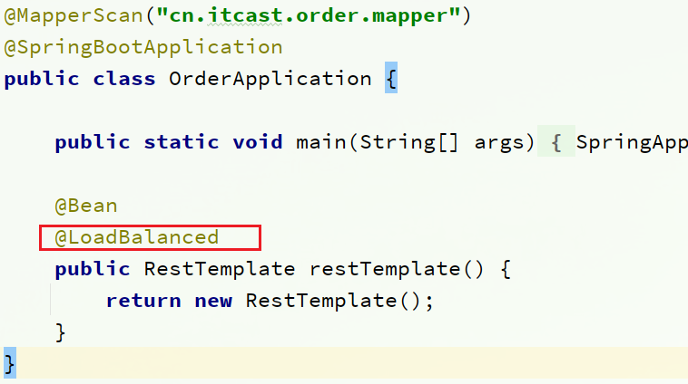
修改order-service服务中的cn.itcast.order.service包下的OrderService类中的queryOrderById方法。修改访问的url路径，用服务名代替ip、端口：

spring会自动帮助我们从eureka-server端，根据userservice这个服务名称，获取实例列表，而后完成负载均衡。
4.Ribbon负载均衡
上一节中，我们添加了@LoadBalanced注解，即可实现负载均衡功能，这是什么原理呢？
4.1.负载均衡原理
SpringCloud底层其实是利用了一个名为Ribbon的组件，来实现负载均衡功能的。

那么我们发出的请求明明是http://userservice/user/1，怎么变成了http://localhost:8081的呢？
4.2.源码跟踪
为什么我们只输入了service名称就可以访问了呢？之前还要获取ip和端口。
显然有人帮我们根据service名称，获取到了服务实例的ip和端口。它就是LoadBalancerInterceptor，这个类会在对RestTemplate的请求进行拦截，然后从Eureka根据服务id获取服务列表，随后利用负载均衡算法得到真实的服务地址信息，替换服务id。
我们进行源码跟踪：
1）LoadBalancerIntercepor

可以看到这里的intercept方法，拦截了用户的HttpRequest请求，然后做了几件事：
request.getURI()：获取请求uri，本例中就是 http://user-service/user/8originalUri.getHost()：获取uri路径的主机名，其实就是服务id，user-servicethis.loadBalancer.execute()：处理服务id，和用户请求。
这里的this.loadBalancer是LoadBalancerClient类型，我们继续跟入。
2）LoadBalancerClient
继续跟入execute方法：

代码是这样的：
- getLoadBalancer(serviceId)：根据服务id获取ILoadBalancer，而ILoadBalancer会拿着服务id去eureka中获取服务列表并保存起来。
- getServer(loadBalancer)：利用内置的负载均衡算法，从服务列表中选择一个。本例中，可以看到获取了8082端口的服务
放行后，再次访问并跟踪，发现获取的是8081：

果然实现了负载均衡。
3）负载均衡策略IRule
在刚才的代码中，可以看到获取服务使通过一个getServer方法来做负载均衡:
我们继续跟入：

继续跟踪源码chooseServer方法，发现这么一段代码：
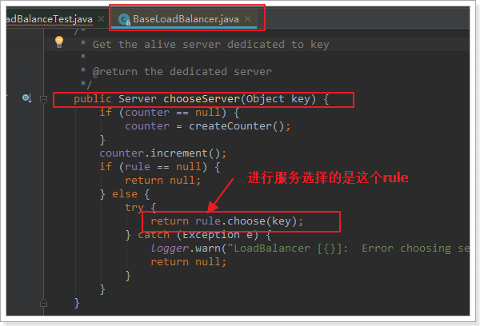
我们看看这个rule是谁：

这里的rule默认值是一个RoundRobinRule，看类的介绍：
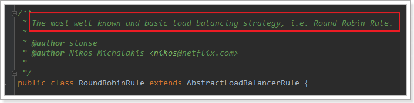
这不就是轮询的意思嘛。
到这里，整个负载均衡的流程我们就清楚了。
4）总结
SpringCloudRibbon的底层采用了一个拦截器，拦截了RestTemplate发出的请求，对地址做了修改。用一幅图来总结一下：

基本流程如下：
- 拦截我们的RestTemplate请求http://userservice/user/1
- RibbonLoadBalancerClient会从请求url中获取服务名称，也就是user-service
- DynamicServerListLoadBalancer根据user-service到eureka拉取服务列表
- eureka返回列表，localhost:8081、localhost:8082
- IRule利用内置负载均衡规则，从列表中选择一个，例如localhost:8081
- RibbonLoadBalancerClient修改请求地址，用localhost:8081替代userservice，得到http://localhost:8081/user/1，发起真实请求
4.3.负载均衡策略
4.3.1.负载均衡策略
负载均衡的规则都定义在IRule接口中，而IRule有很多不同的实现类：

不同规则的含义如下：
| 内置负载均衡规则类 | 规则描述 |
|---|---|
| RoundRobinRule | 简单轮询服务列表来选择服务器。它是Ribbon默认的负载均衡规则。 |
| AvailabilityFilteringRule | 对以下两种服务器进行忽略： （1）在默认情况下，这台服务器如果3次连接失败，这台服务器就会被设置为“短路”状态。短路状态将持续30秒，如果再次连接失败，短路的持续时间就会几何级地增加。 （2）并发数过高的服务器。如果一个服务器的并发连接数过高，配置了AvailabilityFilteringRule规则的客户端也会将其忽略。并发连接数的上限，可以由客户端的 |
| WeightedResponseTimeRule | 为每一个服务器赋予一个权重值。服务器响应时间越长，这个服务器的权重就越小。这个规则会随机选择服务器，这个权重值会影响服务器的选择。 |
| ZoneAvoidanceRule | 以区域可用的服务器为基础进行服务器的选择。使用Zone对服务器进行分类，这个Zone可以理解为一个机房、一个机架等。而后再对Zone内的多个服务做轮询。 |
| BestAvailableRule | 忽略那些短路的服务器，并选择并发数较低的服务器。 |
| RandomRule | 随机选择一个可用的服务器。 |
| RetryRule | 重试机制的选择逻辑 |
默认的实现就是ZoneAvoidanceRule，是一种轮询方案
4.3.2.自定义负载均衡策略
通过定义IRule实现可以修改负载均衡规则，有两种方式：
- 代码方式：在order-service中的OrderApplication类中，定义一个新的IRule：
xxxxxxxxxx41public IRule randomRule(){3 return new RandomRule();4}
- 配置文件方式：在order-service的application.yml文件中，添加新的配置也可以修改规则：
xxxxxxxxxx31userservice# 给某个微服务配置负载均衡规则，这里是userservice服务2 ribbon3 NFLoadBalancerRuleClassNamecom.netflix.loadbalancer.RandomRule # 负载均衡规则
注意，一般用默认的负载均衡规则，不做修改。
4.4.饥饿加载
Ribbon默认是采用懒加载，即第一次访问时才会去创建LoadBalanceClient，请求时间会很长。
而饥饿加载则会在项目启动时创建，降低第一次访问的耗时，通过下面配置开启饥饿加载：
xxxxxxxxxx41ribbon2 eager-load3 enabledtrue4 clientsuserservice
5.Nacos注册中心
国内公司一般都推崇阿里巴巴的技术，比如注册中心，SpringCloudAlibaba也推出了一个名为Nacos的注册中心。
5.1.认识和安装Nacos
Nacos是阿里巴巴的产品，现在是SpringCloud中的一个组件。相比Eureka功能更加丰富，在国内受欢迎程度较高。

安装方式可以参考课前资料《Nacos安装指南.md》
5.2.服务注册到nacos
Nacos是SpringCloudAlibaba的组件，而SpringCloudAlibaba也遵循SpringCloud中定义的服务注册、服务发现规范。因此使用Nacos和使用Eureka对于微服务来说，并没有太大区别。
主要差异在于：
- 依赖不同
- 服务地址不同
1）引入依赖
在cloud-demo父工程的pom文件中的<dependencyManagement>中引入SpringCloudAlibaba的依赖：
xxxxxxxxxx71<dependency>2 <groupId>com.alibaba.cloud</groupId>3 <artifactId>spring-cloud-alibaba-dependencies</artifactId>4 <version>2.2.6.RELEASE</version>5 <type>pom</type>6 <scope>import</scope>7</dependency>然后在user-service和order-service中的pom文件中引入nacos-discovery依赖：
xxxxxxxxxx41<dependency>2 <groupId>com.alibaba.cloud</groupId>3 <artifactId>spring-cloud-starter-alibaba-nacos-discovery</artifactId>4</dependency>
注意：不要忘了注释掉eureka的依赖。
2）配置nacos地址
在user-service和order-service的application.yml中添加nacos地址：
xxxxxxxxxx41spring2 cloud3 nacos4 server-addrlocalhost8848
注意：不要忘了注释掉eureka的地址
3）重启
重启微服务后，登录nacos管理页面，可以看到微服务信息：

5.3.服务分级存储模型
一个服务可以有多个实例，例如我们的user-service，可以有:
- 127.0.0.1:8081
- 127.0.0.1:8082
- 127.0.0.1:8083
假如这些实例分布于全国各地的不同机房，例如：
- 127.0.0.1:8081，在上海机房
- 127.0.0.1:8082，在上海机房
- 127.0.0.1:8083，在杭州机房
Nacos就将同一机房内的实例 划分为一个集群。
也就是说，user-service是服务，一个服务可以包含多个集群，如杭州、上海，每个集群下可以有多个实例，形成分级模型，如图：

微服务互相访问时，应该尽可能访问同集群实例，因为本地访问速度更快。当本集群内不可用时，才访问其它集群。例如：

杭州机房内的order-service应该优先访问同机房的user-service。
5.3.1.给user-service配置集群
修改user-service的application.yml文件，添加集群配置：
xxxxxxxxxx61spring2 cloud3 nacos4 server-addrlocalhost88485 discovery6 cluster-nameHZ # 集群名称重启两个user-service实例后，我们可以在nacos控制台看到下面结果：

我们再次复制一个user-service启动配置，添加属性：
xxxxxxxxxx11-Dserver.port=8083 -Dspring.cloud.nacos.discovery.cluster-name=SH配置如图所示：
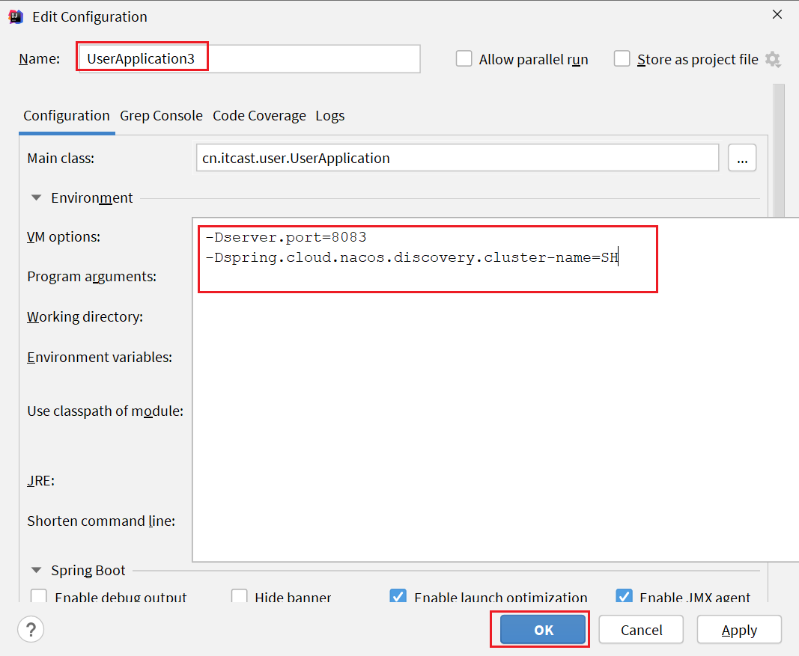
启动UserApplication3后再次查看nacos控制台：

5.3.2.同集群优先的负载均衡
默认的ZoneAvoidanceRule并不能实现根据同集群优先来实现负载均衡。
因此Nacos中提供了一个NacosRule的实现，可以优先从同集群中挑选实例。
1）给order-service配置集群信息
修改order-service的application.yml文件，添加集群配置：
xxxxxxxxxx61spring:2 cloud:3 nacos:4 server-addr: localhost:88485 discovery:6 cluster-name: HZ # 集群名称
2）修改负载均衡规则
修改order-service的application.yml文件，修改负载均衡规则：
xxxxxxxxxx31userservice2 ribbon3 NFLoadBalancerRuleClassNamecom.alibaba.cloud.nacos.ribbon.NacosRule # 负载均衡规则
5.4.权重配置
实际部署中会出现这样的场景：
服务器设备性能有差异，部分实例所在机器性能较好，另一些较差，我们希望性能好的机器承担更多的用户请求。
但默认情况下NacosRule是同集群内随机挑选，不会考虑机器的性能问题。
因此，Nacos提供了权重配置来控制访问频率，权重越大则访问频率越高。
在nacos控制台，找到user-service的实例列表，点击编辑，即可修改权重：

在弹出的编辑窗口，修改权重：

注意：如果权重修改为0，则该实例永远不会被访问
5.5.环境隔离
Nacos提供了namespace来实现环境隔离功能。
- nacos中可以有多个namespace
- namespace下可以有group、service等
- 不同namespace之间相互隔离，例如不同namespace的服务互相不可见

5.5.1.创建namespace
默认情况下，所有service、data、group都在同一个namespace，名为public：

我们可以点击页面新增按钮，添加一个namespace：

然后，填写表单：

就能在页面看到一个新的namespace：

5.5.2.给微服务配置namespace
给微服务配置namespace只能通过修改配置来实现。
例如，修改order-service的application.yml文件：
xxxxxxxxxx71spring2 cloud3 nacos4 server-addrlocalhost88485 discovery6 cluster-nameHZ7 namespace492a7d5d-237b-46a1-a99a-fa8e98e4b0f9 # 命名空间，填ID
重启order-service后，访问控制台，可以看到下面的结果：


此时访问order-service，因为namespace不同，会导致找不到userservice，控制台会报错：

5.6.Nacos与Eureka的区别
Nacos的服务实例分为两种l类型：
- 临时实例：如果实例宕机超过一定时间，会从服务列表剔除，默认的类型。
- 非临时实例：如果实例宕机，不会从服务列表剔除，也可以叫永久实例。
配置一个服务实例为永久实例：
xxxxxxxxxx51spring2 cloud3 nacos4 discovery5 ephemeralfalse # 设置为非临时实例
Nacos和Eureka整体结构类似，服务注册、服务拉取、心跳等待，但是也存在一些差异：
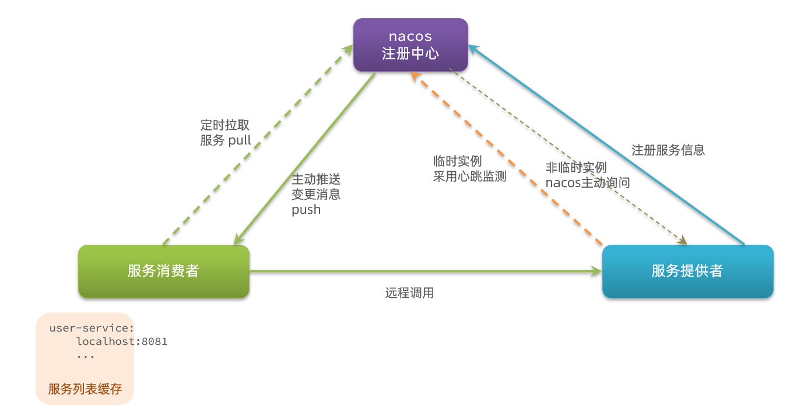
Nacos与eureka的共同点
- 都支持服务注册和服务拉取
- 都支持服务提供者心跳方式做健康检测
Nacos与Eureka的区别
- Nacos支持服务端主动检测提供者状态：临时实例采用心跳模式，非临时实例采用主动检测模式
- 临时实例心跳不正常会被剔除，非临时实例则不会被剔除
- Nacos支持服务列表变更的消息推送模式，服务列表更新更及时
- Nacos集群默认采用AP方式，当集群中存在非临时实例时，采用CP模式；Eureka采用AP方式
6.Nacos配置管理
Nacos除了可以做注册中心，同样可以做配置管理来使用。
6.1.统一配置管理
当微服务部署的实例越来越多，达到数十、数百时，逐个修改微服务配置就会让人抓狂，而且很容易出错。我们需要一种统一配置管理方案，可以集中管理所有实例的配置。

Nacos一方面可以将配置集中管理，另一方可以在配置变更时，及时通知微服务，实现配置的热更新。
6.1.1.在nacos中添加配置文件
如何在nacos中管理配置呢？

然后在弹出的表单中，填写配置信息：

注意：项目的核心配置，需要热更新的配置才有放到nacos管理的必要。基本不会变更的一些配置还是保存在微服务本地比较好。
6.1.2.从微服务拉取配置
微服务要拉取nacos中管理的配置，并且与本地的application.yml配置合并，才能完成项目启动。
但如果尚未读取application.yml，又如何得知nacos地址呢？
因此spring引入了一种新的配置文件：bootstrap.yaml文件，会在application.yml之前被读取，流程如下：

1）引入nacos-config依赖
首先，在user-service服务中，引入nacos-config的客户端依赖：
xxxxxxxxxx51<!--nacos配置管理依赖-->2<dependency>3 <groupId>com.alibaba.cloud</groupId>4 <artifactId>spring-cloud-starter-alibaba-nacos-config</artifactId>5</dependency>2）添加bootstrap.yaml
然后，在user-service中添加一个bootstrap.yaml文件，内容如下：
xxxxxxxxxx101spring2 application3 nameuserservice # 服务名称4 profiles5 activedev #开发环境，这里是dev 6 cloud7 nacos8 server-addrlocalhost8848 # Nacos地址9 config10 file-extensionyaml # 文件后缀名这里会根据spring.cloud.nacos.server-addr获取nacos地址，再根据
${spring.application.name}-${spring.profiles.active}.${spring.cloud.nacos.config.file-extension}作为文件id，来读取配置。
本例中，就是去读取userservice-dev.yaml：

3）读取nacos配置
在user-service中的UserController中添加业务逻辑，读取pattern.dateformat配置：

完整代码：
xxxxxxxxxx291package cn.itcast.user.web;2
3import cn.itcast.user.pojo.User;4import cn.itcast.user.service.UserService;5import lombok.extern.slf4j.Slf4j;6import org.springframework.beans.factory.annotation.Autowired;7import org.springframework.beans.factory.annotation.Value;8import org.springframework.web.bind.annotation.*;9
10import java.time.LocalDateTime;11import java.time.format.DateTimeFormatter;12
13("/user")16public class UserController {17
18 19 private UserService userService;20
21 ("${pattern.dateformat}")22 private String dateformat;23 24 ("now")25 public String now(){26 return LocalDateTime.now().format(DateTimeFormatter.ofPattern(dateformat));27 }28 // ...略29}
在页面访问，可以看到效果：

6.2.配置热更新
我们最终的目的，是修改nacos中的配置后，微服务中无需重启即可让配置生效，也就是配置热更新。
要实现配置热更新，可以使用两种方式：
6.2.1.方式一
在@Value注入的变量所在类上添加注解@RefreshScope：

6.2.2.方式二
使用@ConfigurationProperties注解代替@Value注解。
在user-service服务中，添加一个类，读取patterrn.dateformat属性：
xxxxxxxxxx121package cn.itcast.user.config;2
3import lombok.Data;4import org.springframework.boot.context.properties.ConfigurationProperties;5import org.springframework.stereotype.Component;6
7(prefix = "pattern")10public class PatternProperties {11 private String dateformat;12}
在UserController中使用这个类代替@Value：

完整代码：
xxxxxxxxxx331package cn.itcast.user.web;2
3import cn.itcast.user.config.PatternProperties;4import cn.itcast.user.pojo.User;5import cn.itcast.user.service.UserService;6import lombok.extern.slf4j.Slf4j;7import org.springframework.beans.factory.annotation.Autowired;8import org.springframework.web.bind.annotation.GetMapping;9import org.springframework.web.bind.annotation.PathVariable;10import org.springframework.web.bind.annotation.RequestMapping;11import org.springframework.web.bind.annotation.RestController;12
13import java.time.LocalDateTime;14import java.time.format.DateTimeFormatter;15
16("/user")19public class UserController {20
21 22 private UserService userService;23
24 25 private PatternProperties patternProperties;26
27 ("now")28 public String now(){29 return LocalDateTime.now().format(DateTimeFormatter.ofPattern(patternProperties.getDateformat()));30 }31
32 // 略33}
1.3.配置共享
其实微服务启动时，会去nacos读取多个配置文件，例如：
[spring.application.name]-[spring.profiles.active].yaml，例如：userservice-dev.yaml[spring.application.name].yaml，例如：userservice.yaml
而[spring.application.name].yaml不包含环境，因此可以被多个环境共享。
下面我们通过案例来测试配置共享
1）添加一个环境共享配置
我们在nacos中添加一个userservice.yaml文件：
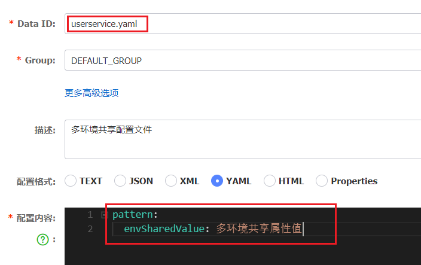
2）在user-service中读取共享配置
在user-service服务中，修改PatternProperties类，读取新添加的属性：
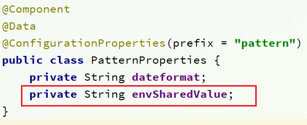
在user-service服务中，修改UserController，添加一个方法：

3）运行两个UserApplication，使用不同的profile
修改UserApplication2这个启动项，改变其profile值：


这样，UserApplication(8081)使用的profile是dev，UserApplication2(8082)使用的profile是test。
启动UserApplication和UserApplication2
访问http://localhost:8081/user/prop，结果：

访问http://localhost:8082/user/prop，结果：
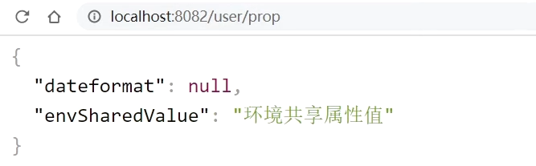
可以看出来，不管是dev，还是test环境，都读取到了envSharedValue这个属性的值。
4）配置共享的优先级
当nacos、服务本地同时出现相同属性时，优先级有高低之分：

1.4.搭建Nacos集群
Nacos生产环境下一定要部署为集群状态，部署方式参考课前资料中的文档：

7.Feign远程调用
先来看我们以前利用RestTemplate发起远程调用的代码：

存在下面的问题：
•代码可读性差，编程体验不统一
•参数复杂URL难以维护
Feign是一个声明式的http客户端，官方地址：https://github.com/OpenFeign/feign
其作用就是帮助我们优雅的实现http请求的发送，解决上面提到的问题。

7.1.Feign替代RestTemplate
Fegin的使用步骤如下：
1）引入依赖
我们在order-service服务的pom文件中引入feign的依赖：
xxxxxxxxxx41<dependency>2 <groupId>org.springframework.cloud</groupId>3 <artifactId>spring-cloud-starter-openfeign</artifactId>4</dependency>
2）添加注解
在order-service的启动类添加注解开启Feign的功能：

3）编写Feign的客户端
在order-service中新建一个接口，内容如下：
xxxxxxxxxx121package cn.itcast.order.client;2
3import cn.itcast.order.pojo.User;4import org.springframework.cloud.openfeign.FeignClient;5import org.springframework.web.bind.annotation.GetMapping;6import org.springframework.web.bind.annotation.PathVariable;7
8("userservice")9public interface UserClient {10 ("/user/{id}")11 User findById(("id") Long id);12}
这个客户端主要是基于SpringMVC的注解来声明远程调用的信息，比如：
- 服务名称：userservice
- 请求方式：GET
- 请求路径：/user/{id}
- 请求参数：Long id
- 返回值类型：User
这样，Feign就可以帮助我们发送http请求，无需自己使用RestTemplate来发送了。
4）测试
修改order-service中的OrderService类中的queryOrderById方法，使用Feign客户端代替RestTemplate：

是不是看起来优雅多了。
5）总结
使用Feign的步骤：
① 引入依赖
② 添加@EnableFeignClients注解
③ 编写FeignClient接口
④ 使用FeignClient中定义的方法代替RestTemplate
7.2.自定义配置
Feign可以支持很多的自定义配置，如下表所示：
| 类型 | 作用 | 说明 |
|---|---|---|
| feign.Logger.Level | 修改日志级别 | 包含四种不同的级别：NONE、BASIC、HEADERS、FULL |
| feign.codec.Decoder | 响应结果的解析器 | http远程调用的结果做解析，例如解析json字符串为java对象 |
| feign.codec.Encoder | 请求参数编码 | 将请求参数编码，便于通过http请求发送 |
| feign. Contract | 支持的注解格式 | 默认是SpringMVC的注解 |
| feign. Retryer | 失败重试机制 | 请求失败的重试机制，默认是没有，不过会使用Ribbon的重试 |
一般情况下，默认值就能满足我们使用，如果要自定义时，只需要创建自定义的@Bean覆盖默认Bean即可。
下面以日志为例来演示如何自定义配置。
7.2.1.配置文件方式
基于配置文件修改feign的日志级别可以针对单个服务：
xxxxxxxxxx51feign2 client3 config4 userservice# 针对某个微服务的配置5 loggerLevelFULL # 日志级别 也可以针对所有服务：
xxxxxxxxxx51feign2 client3 config4 default# 这里用default就是全局配置，如果是写服务名称，则是针对某个微服务的配置5 loggerLevelFULL # 日志级别
而日志的级别分为四种：
- NONE：不记录任何日志信息，这是默认值。
- BASIC：仅记录请求的方法，URL以及响应状态码和执行时间
- HEADERS：在BASIC的基础上，额外记录了请求和响应的头信息
- FULL：记录所有请求和响应的明细，包括头信息、请求体、元数据。
7.2.2.Java代码方式
也可以基于Java代码来修改日志级别，先声明一个类，然后声明一个Logger.Level的对象：
xxxxxxxxxx61public class DefaultFeignConfiguration {2 3 public Logger.Level feignLogLevel(){4 return Logger.Level.BASIC; // 日志级别为BASIC5 }6}
如果要全局生效，将其放到启动类的@EnableFeignClients这个注解中：
xxxxxxxxxx11(defaultConfiguration = DefaultFeignConfiguration .class)
如果是局部生效，则把它放到对应的@FeignClient这个注解中：
xxxxxxxxxx11(value = "userservice", configuration = DefaultFeignConfiguration .class)
7.3.Feign使用优化
Feign底层发起http请求，依赖于其它的框架。其底层客户端实现包括：
•URLConnection：默认实现，不支持连接池
•Apache HttpClient ：支持连接池
•OKHttp：支持连接池
因此提高Feign的性能主要手段就是使用连接池代替默认的URLConnection。
这里我们用Apache的HttpClient来演示。
1）引入依赖
在order-service的pom文件中引入Apache的HttpClient依赖：
xxxxxxxxxx51<!--httpClient的依赖 -->2<dependency>3 <groupId>io.github.openfeign</groupId>4 <artifactId>feign-httpclient</artifactId>5</dependency>
2）配置连接池
在order-service的application.yml中添加配置：
xxxxxxxxxx91feign2 client3 config4 default# default全局的配置5 loggerLevelBASIC # 日志级别，BASIC就是基本的请求和响应信息6 httpclient7 enabledtrue # 开启feign对HttpClient的支持8 max-connections200 # 最大的连接数9 max-connections-per-route50 # 每个路径的最大连接数
接下来，在FeignClientFactoryBean中的loadBalance方法中打断点：

Debug方式启动order-service服务，可以看到这里的client，底层就是Apache HttpClient：

总结，Feign的优化：
1.日志级别尽量用basic
2.使用HttpClient或OKHttp代替URLConnection
① 引入feign-httpClient依赖
② 配置文件开启httpClient功能，设置连接池参数
7.4.最佳实践
所谓最近实践，就是使用过程中总结的经验，最好的一种使用方式。
自习观察可以发现，Feign的客户端与服务提供者的controller代码非常相似：
feign客户端：

UserController：

有没有一种办法简化这种重复的代码编写呢？
7.4.1.继承方式
一样的代码可以通过继承来共享：
1）定义一个API接口，利用定义方法，并基于SpringMVC注解做声明。
2）Feign客户端和Controller都集成改接口

优点：
- 简单
- 实现了代码共享
缺点：
- 服务提供方、服务消费方紧耦合
- 参数列表中的注解映射并不会继承，因此Controller中必须再次声明方法、参数列表、注解
7.4.2.抽取方式
将Feign的Client抽取为独立模块，并且把接口有关的POJO、默认的Feign配置都放到这个模块中，提供给所有消费者使用。
例如，将UserClient、User、Feign的默认配置都抽取到一个feign-api包中，所有微服务引用该依赖包，即可直接使用。

7.4.3.实现基于抽取的最佳实践
1）抽取
首先创建一个module，命名为feign-api：

项目结构：

在feign-api中然后引入feign的starter依赖
xxxxxxxxxx41<dependency>2 <groupId>org.springframework.cloud</groupId>3 <artifactId>spring-cloud-starter-openfeign</artifactId>4</dependency>
然后，order-service中编写的UserClient、User、DefaultFeignConfiguration都复制到feign-api项目中

2）在order-service中使用feign-api
首先，删除order-service中的UserClient、User、DefaultFeignConfiguration等类或接口。
在order-service的pom文件中中引入feign-api的依赖：
xxxxxxxxxx51<dependency>2 <groupId>cn.itcast.demo</groupId>3 <artifactId>feign-api</artifactId>4 <version>1.0</version>5</dependency>
修改order-service中的所有与上述三个组件有关的导包部分，改成导入feign-api中的包
3）重启测试
重启后，发现服务报错了：

这是因为UserClient现在在cn.itcast.feign.clients包下，
而order-service的@EnableFeignClients注解是在cn.itcast.order包下，不在同一个包，无法扫描到UserClient。
4）解决扫描包问题
方式一：
指定Feign应该扫描的包：
xxxxxxxxxx11(basePackages = "cn.itcast.feign.clients")
方式二：
指定需要加载的Client接口：
xxxxxxxxxx11(clients = {UserClient.class})
8.Gateway服务网关
Spring Cloud Gateway 是 Spring Cloud 的一个全新项目，该项目是基于 Spring 5.0，Spring Boot 2.0 和 Project Reactor 等响应式编程和事件流技术开发的网关，它旨在为微服务架构提供一种简单有效的统一的 API 路由管理方式。
8.1.为什么需要网关
Gateway网关是我们服务的守门神，所有微服务的统一入口。
网关的核心功能特性：
- 请求路由
- 权限控制
- 限流
架构图：

权限控制：网关作为微服务入口，需要校验用户是是否有请求资格，如果没有则进行拦截。
路由和负载均衡：一切请求都必须先经过gateway，但网关不处理业务，而是根据某种规则，把请求转发到某个微服务，这个过程叫做路由。当然路由的目标服务有多个时，还需要做负载均衡。
限流：当请求流量过高时，在网关中按照下流的微服务能够接受的速度来放行请求，避免服务压力过大。
在SpringCloud中网关的实现包括两种：
- gateway
- zuul
Zuul是基于Servlet的实现，属于阻塞式编程。而SpringCloudGateway则是基于Spring5中提供的WebFlux，属于响应式编程的实现，具备更好的性能。
8.2.gateway快速入门
下面，我们就演示下网关的基本路由功能。基本步骤如下：
- 创建SpringBoot工程gateway，引入网关依赖
- 编写启动类
- 编写基础配置和路由规则
- 启动网关服务进行测试
1）创建gateway服务，引入依赖
创建服务：

引入依赖：
xxxxxxxxxx101<!--网关-->2<dependency>3 <groupId>org.springframework.cloud</groupId>4 <artifactId>spring-cloud-starter-gateway</artifactId>5</dependency>6<!--nacos服务发现依赖-->7<dependency>8 <groupId>com.alibaba.cloud</groupId>9 <artifactId>spring-cloud-starter-alibaba-nacos-discovery</artifactId>10</dependency>
2）编写启动类
xxxxxxxxxx121package cn.itcast.gateway;2
3import org.springframework.boot.SpringApplication;4import org.springframework.boot.autoconfigure.SpringBootApplication;5
6public class GatewayApplication {8
9 public static void main(String[] args) {10 SpringApplication.run(GatewayApplication.class, args);11 }12}
3）编写基础配置和路由规则
创建application.yml文件，内容如下：
xxxxxxxxxx151server2 port10010 # 网关端口3spring4 application5 namegateway # 服务名称6 cloud7 nacos8 server-addrlocalhost8848 # nacos地址9 gateway10 routes# 网关路由配置11iduser-service # 路由id，自定义，只要唯一即可12 # uri: http://127.0.0.1:8081 # 路由的目标地址 http就是固定地址13 urilb//userservice # 路由的目标地址 lb就是负载均衡，后面跟服务名称14 predicates# 路由断言，也就是判断请求是否符合路由规则的条件15Path=/user/** # 这个是按照路径匹配，只要以/user/开头就符合要求
我们将符合Path 规则的一切请求，都代理到 uri参数指定的地址。
本例中，我们将 /user/**开头的请求，代理到lb://userservice，lb是负载均衡，根据服务名拉取服务列表，实现负载均衡。
4）重启测试
重启网关，访问http://localhost:10010/user/1时，符合/user/**规则，请求转发到uri：http://userservice/user/1，得到了结果：

5）网关路由的流程图
整个访问的流程如下：

总结：
网关搭建步骤：
- 创建项目，引入nacos服务发现和gateway依赖
- 配置application.yml，包括服务基本信息、nacos地址、路由
路由配置包括：
- 路由id：路由的唯一标示
- 路由目标（uri）：路由的目标地址，http代表固定地址，lb代表根据服务名负载均衡
- 路由断言（predicates）：判断路由的规则，
- 路由过滤器（filters）：对请求或响应做处理
接下来，就重点来学习路由断言和路由过滤器的详细知识
8.3.断言工厂
我们在配置文件中写的断言规则只是字符串，这些字符串会被Predicate Factory读取并处理，转变为路由判断的条件
例如Path=/user/**是按照路径匹配，这个规则是由
org.springframework.cloud.gateway.handler.predicate.PathRoutePredicateFactory类来
处理的，像这样的断言工厂在SpringCloudGateway还有十几个:
| 名称 | 说明 | 示例 |
|---|---|---|
| After | 是某个时间点后的请求 | - After=2037-01-20T17:42:47.789-07:00[America/Denver] |
| Before | 是某个时间点之前的请求 | - Before=2031-04-13T15:14:47.433+08:00[Asia/Shanghai] |
| Between | 是某两个时间点之前的请求 | - Between=2037-01-20T17:42:47.789-07:00[America/Denver], 2037-01-21T17:42:47.789-07:00[America/Denver] |
| Cookie | 请求必须包含某些cookie | - Cookie=chocolate, ch.p |
| Header | 请求必须包含某些header | - Header=X-Request-Id, \d+ |
| Host | 请求必须是访问某个host（域名） | - Host=.somehost.org,.anotherhost.org |
| Method | 请求方式必须是指定方式 | - Method=GET,POST |
| Path | 请求路径必须符合指定规则 | - Path=/red/{segment},/blue/** |
| Query | 请求参数必须包含指定参数 | - Query=name, Jack或者- Query=name |
| RemoteAddr | 请求者的ip必须是指定范围 | - RemoteAddr=192.168.1.1/24 |
| Weight | 权重处理 |
我们只需要掌握Path这种路由工程就可以了。
8.4.过滤器工厂
GatewayFilter是网关中提供的一种过滤器，可以对进入网关的请求和微服务返回的响应做处理：

8.4.1.路由过滤器的种类
Spring提供了31种不同的路由过滤器工厂。例如：
| 名称 | 说明 |
|---|---|
| AddRequestHeader | 给当前请求添加一个请求头 |
| RemoveRequestHeader | 移除请求中的一个请求头 |
| AddResponseHeader | 给响应结果中添加一个响应头 |
| RemoveResponseHeader | 从响应结果中移除有一个响应头 |
| RequestRateLimiter | 限制请求的流量 |
8.4.2.请求头过滤器
下面我们以AddRequestHeader 为例来讲解。
需求：给所有进入userservice的请求添加一个请求头：Truth=itcast is freaking awesome!
只需要修改gateway服务的application.yml文件，添加路由过滤即可：
xxxxxxxxxx101spring2 cloud3 gateway4 routes5iduser-service 6 urilb//userservice 7 predicates8Path=/user/** 9 filters# 过滤器10AddRequestHeader=Truth, Itcast is freaking awesome! # 添加请求头当前过滤器写在userservice路由下，因此仅仅对访问userservice的请求有效。
8.4.3.默认过滤器
如果要对所有的路由都生效，则可以将过滤器工厂写到default下。格式如下：
xxxxxxxxxx101spring2 cloud3 gateway4 routes5iduser-service 6 urilb//userservice 7 predicates8Path=/user/**9 default-filters# 默认过滤项10AddRequestHeader=Truth, Itcast is freaking awesome!
8.4.4.总结
过滤器的作用是什么？
① 对路由的请求或响应做加工处理，比如添加请求头
② 配置在路由下的过滤器只对当前路由的请求生效
defaultFilters的作用是什么？
① 对所有路由都生效的过滤器
8.5.全局过滤器
上一节学习的过滤器，网关提供了31种，但每一种过滤器的作用都是固定的。如果我们希望拦截请求，做自己的业务逻辑则没办法实现。
8.5.1.全局过滤器作用
全局过滤器的作用也是处理一切进入网关的请求和微服务响应，与GatewayFilter的作用一样。区别在于GatewayFilter通过配置定义，处理逻辑是固定的；而GlobalFilter的逻辑需要自己写代码实现。
定义方式是实现GlobalFilter接口。
xxxxxxxxxx101public interface GlobalFilter {2 /**3 * 处理当前请求，有必要的话通过{@link GatewayFilterChain}将请求交给下一个过滤器处理4 *5 * @param exchange 请求上下文，里面可以获取Request、Response等信息6 * @param chain 用来把请求委托给下一个过滤器 7 * @return {@code Mono<Void>} 返回标示当前过滤器业务结束8 */9 Mono<Void> filter(ServerWebExchange exchange, GatewayFilterChain chain);10}
在filter中编写自定义逻辑，可以实现下列功能：
- 登录状态判断
- 权限校验
- 请求限流等
8.5.2.自定义全局过滤器
需求：定义全局过滤器，拦截请求，判断请求的参数是否满足下面条件：
- 参数中是否有authorization，
- authorization参数值是否为admin
如果同时满足则放行，否则拦截
实现：
在gateway中定义一个过滤器：
xxxxxxxxxx311package cn.itcast.gateway.filters;2
3import org.springframework.cloud.gateway.filter.GatewayFilterChain;4import org.springframework.cloud.gateway.filter.GlobalFilter;5import org.springframework.core.annotation.Order;6import org.springframework.http.HttpStatus;7import org.springframework.stereotype.Component;8import org.springframework.web.server.ServerWebExchange;9import reactor.core.publisher.Mono;10
11(-1)12public class AuthorizeFilter implements GlobalFilter {14 15 public Mono<Void> filter(ServerWebExchange exchange, GatewayFilterChain chain) {16 // 1.获取请求参数17 MultiValueMap<String, String> params = exchange.getRequest().getQueryParams();18 // 2.获取authorization参数19 String auth = params.getFirst("authorization");20 // 3.校验21 if ("admin".equals(auth)) {22 // 放行23 return chain.filter(exchange);24 }25 // 4.拦截26 // 4.1.禁止访问，设置状态码27 exchange.getResponse().setStatusCode(HttpStatus.FORBIDDEN);28 // 4.2.结束处理29 return exchange.getResponse().setComplete();30 }31}
8.5.3.过滤器执行顺序
请求进入网关会碰到三类过滤器：当前路由的过滤器、DefaultFilter、GlobalFilter
请求路由后，会将当前路由过滤器和DefaultFilter、GlobalFilter，合并到一个过滤器链（集合）中，排序后依次执行每个过滤器：

排序的规则是什么呢？
- 每一个过滤器都必须指定一个int类型的order值，order值越小，优先级越高，执行顺序越靠前。
- GlobalFilter通过实现Ordered接口，或者添加@Order注解来指定order值，由我们自己指定
- 路由过滤器和defaultFilter的order由Spring指定，默认是按照声明顺序从1递增。
- 当过滤器的order值一样时，会按照 defaultFilter > 路由过滤器 > GlobalFilter的顺序执行。
详细内容，可以查看源码：
org.springframework.cloud.gateway.route.RouteDefinitionRouteLocator#getFilters()方法是先加载defaultFilters，然后再加载某个route的filters，然后合并。
org.springframework.cloud.gateway.handler.FilteringWebHandler#handle()方法会加载全局过滤器，与前面的过滤器合并后根据order排序，组织过滤器链
8.6.跨域问题
8.6.1.什么是跨域问题
跨域：域名不一致就是跨域，主要包括：
- 域名不同： www.taobao.com 和 www.taobao.org 和 www.jd.com 和 miaosha.jd.com
- 域名相同，端口不同：localhost:8080和localhost8081
跨域问题：浏览器禁止请求的发起者与服务端发生跨域ajax请求，请求被浏览器拦截的问题
解决方案：CORS，这个以前应该学习过，这里不再赘述了。不知道的小伙伴可以查看https://www.ruanyifeng.com/blog/2016/04/cors.html
8.6.2.模拟跨域问题
找到课前资料的页面文件：

放入tomcat或者nginx这样的web服务器中，启动并访问。
可以在浏览器控制台看到下面的错误：

从localhost:8090访问localhost:10010，端口不同，显然是跨域的请求。
8.6.3.解决跨域问题
在gateway服务的application.yml文件中，添加下面的配置：
xxxxxxxxxx191spring2 cloud3 gateway4 # 。。。5 globalcors# 全局的跨域处理6 add-to-simple-url-handler-mappingtrue # 解决options请求被拦截问题7 corsConfigurations8 '[/**]'9 allowedOrigins# 允许哪些网站的跨域请求 10"http://localhost:8090"11 allowedMethods# 允许的跨域ajax的请求方式12"GET"13"POST"14"DELETE"15"PUT"16"OPTIONS"17 allowedHeaders"*" # 允许在请求中携带的头信息18 allowCredentialstrue # 是否允许携带cookie19 maxAge360000 # 这次跨域检测的有效期